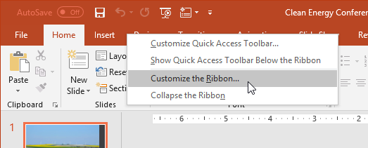
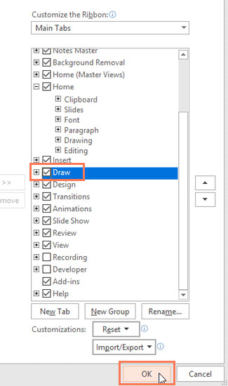
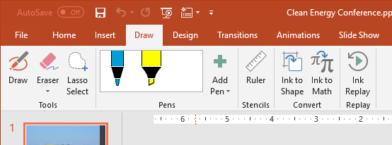
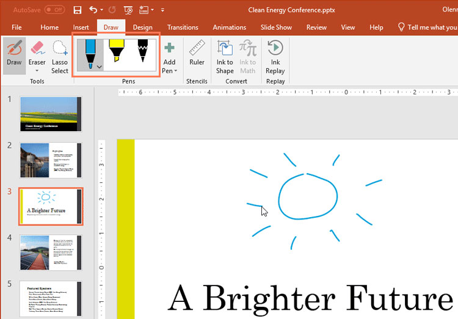
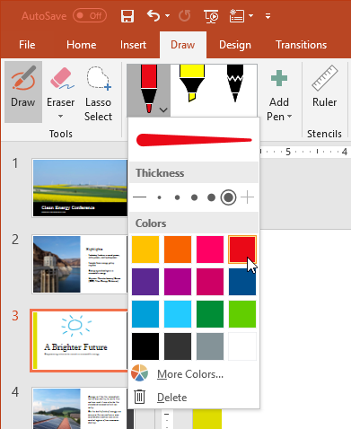
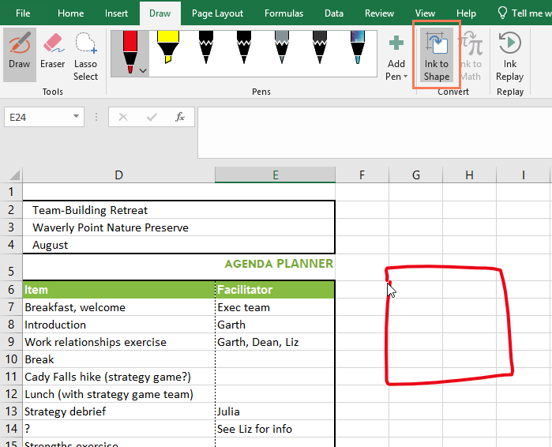
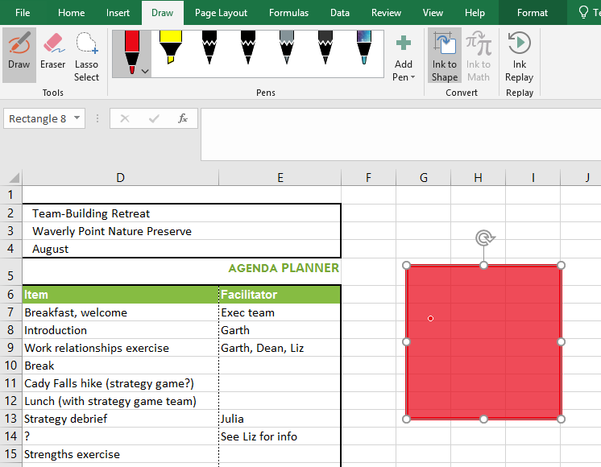
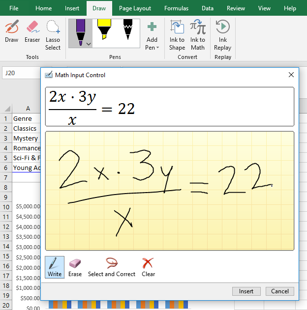
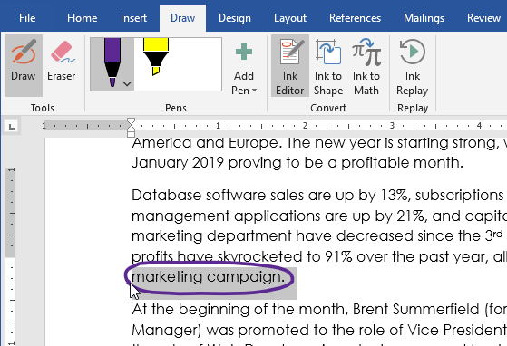

/en/excel/office-intelligent-services/content/
Cho dù bạn sử dụng bút kỹ thuật số, màn hình cảm ứng hay chuột,tính năng vẽtrong Office đều có thể giúp bạn thêm ghi chú, tạo hình, chỉnh sửa văn bản, v.v.Tab Vẽcó sẵn trongWord,ExcelvàPowerPoint.
Hầu hết các tính năng được đề cập bên dưới đều có sẵn trongOffice 365vàOffice 2019, mặc dù một số tính năng trong số đó chỉ có sẵn trong Office 365.
Xem video bên dưới để tìm hiểu thêm về cách sử dụng tab Vẽ.
Tab Draw thường được tìm thấy trên Ribbon. Tuy nhiên, nếu bạn không nhìn thấy nó trên máy của mình thì đây là cách thêm nó.

2. Chọn hộp bên cạnhVẽ, sau đó nhấp vàoOK.
3. Tab Draw bây giờ sẽ có sẵn trong Ribbon.
Tab Draw cung cấp ba loại họa tiết vẽ:bút,bút chìvàtô sáng, mỗi loại có một giao diện khác nhau. Để chọn một cái, chỉ cần nhấp vào nó và bạn đã sẵn sàng bắt đầu vẽ.

Nếu bạn muốn thay đổimàuhoặcđộ dàycủa bút, hãy nhấp vào mũi tên thả xuống bên cạnh bút và chọn tùy chọn của bạn. Khi bạn hoàn tất, hãy nhấp chuột ra khỏi menu để tiếp tục vẽ.

Khi bạn vẽ hình bằng tay, có thể khó vẽ chúng một cách hoàn hảo. May mắn thay, công cụInk to Shapecó thể giúp ích cho việc này. Chỉ cần nhấp vàoInk to Shape, sau đó vẽ hình dạng bạn chọn.

Sau đó, tính năngInk to Shapesẽ tìm ra loại hình bạn đã vẽ và sửa bất kỳ điểm không hoàn hảo nào để làm cho nó trông bóng bẩy hơn.

Ngoài các hình dạng, bạn có thể viết các phương trình toán học phức tạp bằng công cụInk to Math. Khi bạn viết một phương trình, công cụ sẽ đọc những gì bạn đang viết và dịch nó thành một phương trình được định dạng đúng.

Word còn có một tính năng vẽ độc quyền có tênInk Editor. Bạn có thể khoanh tròn văn bản để chọn, gạch bỏ văn bản để xóa văn bản đó, v.v. Tính năng nàychỉ khả dụng với Office 365, không phải Office 2019.

Các tính năng vẽ này cung cấp cho bạn nhiều tùy chọn hơn để tùy chỉnh dự án của bạn và giúp sử dụng Office trên máy tính bảng và màn hình cảm ứng dễ dàng hơn.
/en/excel/working-with-icons/content/